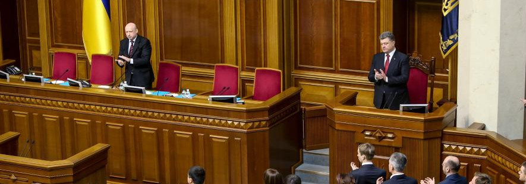
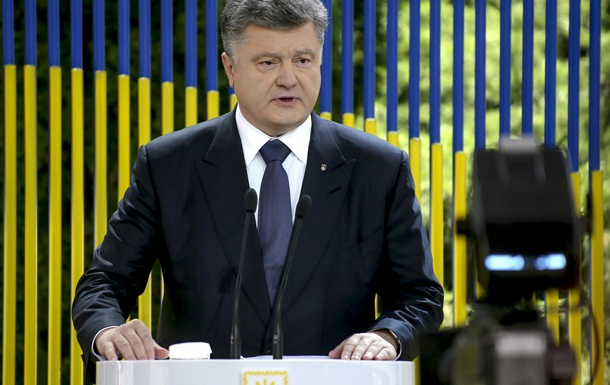

О. Бондаренко: Как зажигал Порошенко
Последняя неделя мая была богата не столько на политические события, сколько на всевозможные выступления и заявления высшей верхушки украинской власти.
«Королем вечеринки» стал, безусловно, Президент страны Петр Алексеевич Порошенко. На пресс-конференции 5 июня глава государства водил всех по лабиринтам своих ответов (ниже я объясню, почему), а днем ранее, 4 июня, главнокомандующий просто-таки «зажигал звезды».
Да, похоже, выступление Порошенко в Верховной Раде показалось гениальным только журналистам 5 канала.
Гарант рассказывал о летописных обрах, золотой украинской осени, душах, которые пролетели через его кабинет.
Но кроме заискивающих журналистов никто из этого спича не вынес ничего полезного. А ведь выступление, я напомню, стало ежегодным посланием президента! То есть, Порошенко должен был четко и по делу рассказать: что он сделал и не сделал за последние 12 месяцев.
Однако вместо грамотного анализа из уст Петра Алексеевича вылетали фразы, напоминающие цитаты из какого-то низкопробного женского романа.
Начал свое шоу президент с идеи фикс украинской власти. Безвизового режима.
Этот мыльный пузырь, созданный для граждан и отвлекающий от реальных проблем в стране, стал прекрасным поводом для расправы с политическими оппонентами. Объясню почему.
В своем выступлении Петр Порошенко заявил, что глава Государственной миграционной службы Сергей Радутный отправился в отставку, а процесс выполнения «домашнего задания» для получения этого самого безвизового режима теперь будет контролировать сам глава державы.
Первым «козлом отпущения» стал Радутный, но вполне очевидно, что кольцо сжимается вокруг одного человека – министра внутренних дел Арсена Авакова.
Ведь накануне, 19 мая, лидер фракции БПП Юрий Луценко заявил, что Украина не выполнила необходимые требования ЕС из-за миграционной службы.
«К сожалению, миграционная служба не выполнила эти задачи… Министр внутренних дел самостоятельно принимает решение, но мне кажется, лишь такой подход является европейским. Человек имел определенную работу, которую не выполнил, в результате чего пострадала вся страна, поэтому этот человек должен уйти. Другой вариант неприемлем в отношениях общества и нанятой для служения ему власти».
Спустя три дня, 22 мая, уполномоченный президента по вопросам урегулирования ситуации в Донбассе Ирина Геращенко заявила следующее:
«Президент потребовал кадровых решений и выводов в отношении руководителей тех служб, которые медлили с выполнением определенных пунктов плана действий по либерализации визового режима. Больше всего замечаний к миграционной службе и МВД».
По-моему, все достаточно однозначно и прямо.
Кстати, сам президент продолжил выступление в ВР дифирамбами в адрес грузинки Эки Згуладзе:
«И кстати, ее (полиции) будущим главой я вижу такого же человека, как Эка Згуладзе, чистого, не связанного коррупционными связями, решительно настроенного на реформы. Хотя это дело, безусловно, парламента и правительства».
Но не только это заявление Петра Алексеевича стало сигналом для отдельных чиновников.
Глава страны рассказал и о том, что политические партии должны финансироваться из госбюджета. Это, мол, поможет деолигархизации украинской политики.
«Как бы сложно нам сегодня не было, эти расходы я считаю приоритетными… Партии должны зависеть только от избирателей, и государственное финансирование — это условие такой независимости… И я рассчитываю на поддержку парламента в этом вопросе».
Государственное финансирование партий — это знак равенства урезаниям финансирований партий частными лицами. То есть, накануне местных выборов (да и всех последующих) Порошенко попросту запрещает большую часть политической рекламы.
Можно вспомнить, рекламой КАКОЙ партии были завешены все города Украины и забиты телеэфиры страны. Очевидно: рекламой партии Арсения Яценюка.
Но соревнуются Президент и премьер не только на бигбордах. Основная борьба между ними по-прежнему проходит за звание главного популиста.
Свое выступление в парламенте Порошенко продолжил рассказами и обещаниями индексации пенсий и зарплат. Правда, призвал это делать «осторожно и без популизма». Прям каламбур какой-то.
Популизм – это само заявление об индексации, о котором рассказывал накануне и премьер Яценюк.
Ведь в это же время глава Минфина Наталья Яресько открыто говорит – ни о какой индексации речи не идет. Денег попросту нет.
Но какое до этого дело Порошенко? Пока Яресько будет отчитываться перед кредиторами и западными партнерами, президент может и об индексации, и о коррупции, и о том, какой же он демократ:
«Я остался на платформе парламентско-президентской республики, и стану первым президентом, который не забирает полномочия под себя».
Все о себе, любимом.
Кстати, вышеприведенная фраза напомнила снова-таки Яценюка. А точнее его высказывание: «Мы пенсии не подняли, но и не опустили!».
Так и тут. Себе полномочий больше не забрал – и за это скажите спасибо.
Диссонанс в ежегодном отчете главы государства в парламенте звучал, кстати, несколько раз.
Например, Порошенко чуть ли не со слезами на глазах рассказывал о том, как у него на сердце остались тысячи рубцов от смертей украинцев в Донбассе. О том, как души умерших пролетали через его кабинет и с каждой он говорил.
При этом за несколько минут до этого Петр Алексеевич умудрился громко и уверенно вещать о том, что соцвыплаты и пенсии Украина в ДНР и ЛНР не возобновит.
«На данный момент гуманитарные грузы и пенсии, которые получают те, кто зарегистрировался на свободной от террористов территории, — максимум допустимого. Содержать и дотировать убийц, боевиков, помогать удерживаться на плаву бандитам Киев не будет».
Голодные бабушки и дедушки Донбасса не заставят нас усомниться в том, что Порошенко искренне сопереживает и страдает за народ.
В целом выступление Петра Алексеевича в Верховной Раде – золотая пыль. Много блеска, а потрогать-то и нечего. Что сделал? Что сделает? Непонятно.
Исправить ситуацию можно было на следующий день, 5 июня, в ходе пресс-конференции для журналистов. Тут уже вроде и вопросы поконкретнее, и спичрайтеров нет.

Однако все опять и снова. Более того: казалось, что у президента порой раздвоение личности.
Авакова и Яценюка увольнять не станет, да и не его это компетенция. Но если общественный запрос будет – немедленно обратиться к коалиции с просьбой отреагировать.
Касательно газеты «Вести» противоречие на противоречии: большинство материалов не нравится, хотя год эту газету не читает. Закрывать СМИ не может. Правда, если Верховная Рада проголосует за конкретный законопроект, то должны быть приняты соответствующие решения в отношении того или иного средства массовой информации.
Не люблю, но не читал. Закрывать не могу, но если парламент проголосует – закрыть можно.
Точно так же президент отвечал и на другие вопросы. Например, об увеличении доходов в 7 раз:
«О состоянии моих доходов вы могли почитать сразу же после обнародования моей декларации. Я уверен, что все доходы должны декларироваться, и с них должны платиться налоги. Это хороший пример для олигархов, в том числе и для владельца вашего канала. Все средства, которые были задекларированы, расписаны. Более 90 млн. пошли на финансирование предвыборной кампании.. Вторая часть — на финансирование парламентской кампании. Остаток — выплаченные мне качестве дивидендов средства — все, без остатка пошли на благотворительные цели воинам АТО.»
То есть, доходы увеличил. Но потратил честно на рекламную кампанию и благотворительность.
Как увеличил – непонятно. Однако они же пошли на благие цели. Это главное.
Или, к примеру, ответ на вопрос о продаже бизнеса: «Я хотел бы продать, но он арестован». Потом добавил, что продавать и не обязан. Закон этого не требует. Закончил ответ тем, что все же продаст.
Ну, и, конечно, встречу с Фирташем Порошенко прокомментировал в этой же манере.
Вроде и встречался, а вроде и ничего не этой встрече не было.
Если резюмировать – президент на минувшей неделе действительно зажигал звезды.
Зажигал эмоциональными речами.
Он сначала грозно рассказывал об обороноспособности страны, хмурил брови и чуть ли не кричал. Затем медленно и со слезами на глазах шептал об убитых на войне.
Зажигал абсолютно неуместными литературными оборотами. Шутками про намазанные салом губы.
Зажигал ответами в стиле: «Да, но нет, хотя в случае чего: да».
Но зажигал разве что этим.
Зажечь отчетом своих конкретных действий и достижений у него не удалось.
Что сделал глава государства за год своей работы – так и не стало понятно даже за 5 часов его речей.
Однако стало понятно другое. Украинский народ последующие несколько лет точно получит в подарок еще много ораторских шедевров своей «попытки №5».
Автор: Ольга Бондаренко